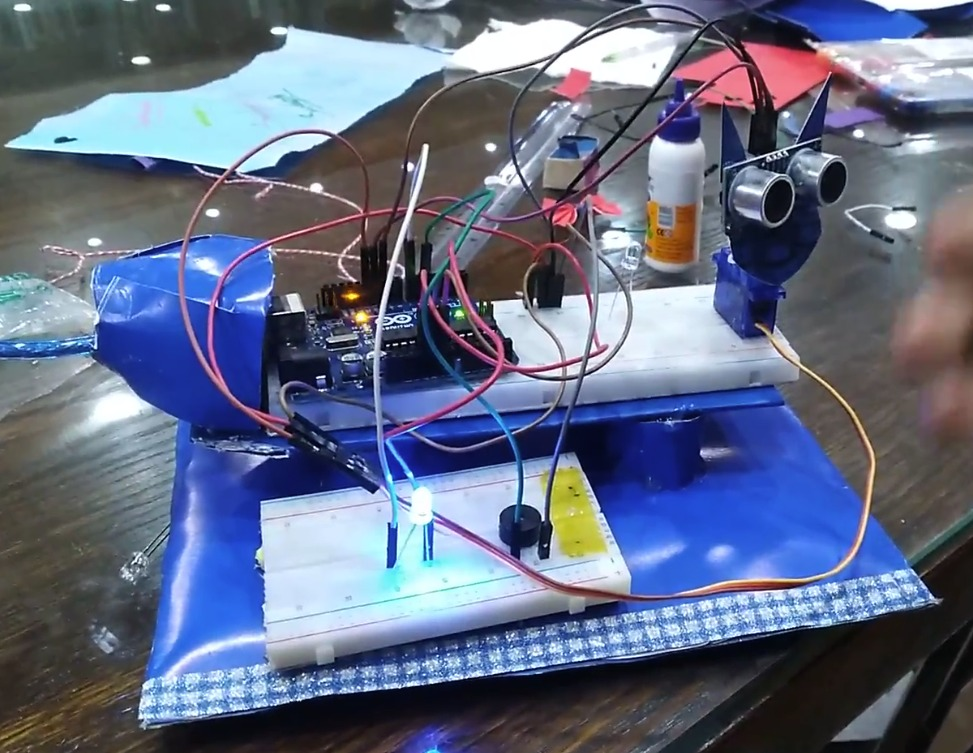
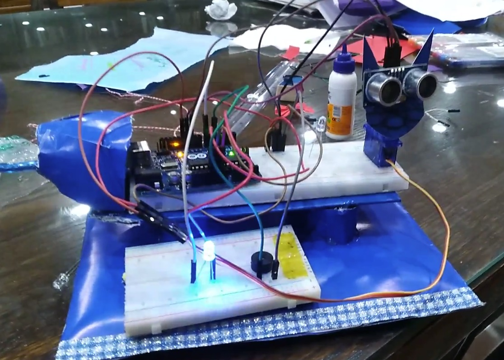
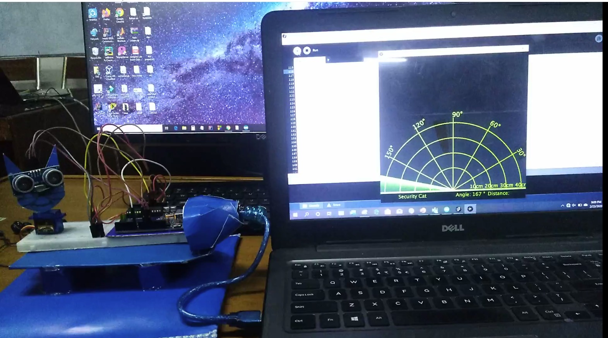
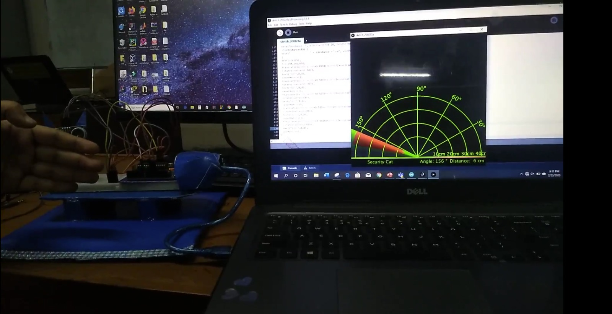

Objective
An ultrasonic radar system was developed to detect objects at different distances and angles, tell how far they are, and give auditory alerts for objects that are too close.
Methodology
An ultrasonic sensor is attached to an Arduino microcontroller to build the system. The TRIG pin is used to send sound waves, and the ECHO pin is used to receive them. A servo motor is connected to the Arduino, which rotates the sensor in small steps (15° to 165°) to cover a wide area. A buzzer is added to the system to provide alerts when an object is close to less than 10cm. Arduino IDE platform is used to write the code to control the servo motor, calculate distances, and activate the buzzer when an object is detected within a close range. The Processing IDE is used to create a radar display on the computer by writing code to visualize object positions based on the sensor data.


Result
This project can be used as a security system to detect intruders. It can be also help blind people by warning them of obstacles.



